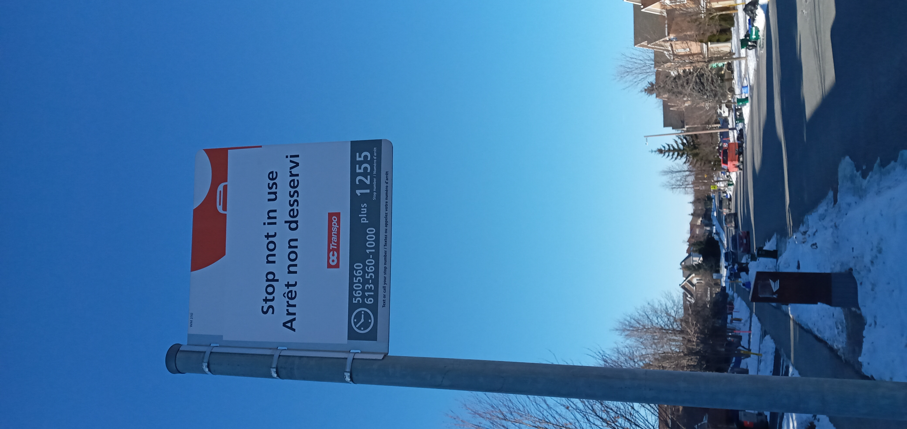
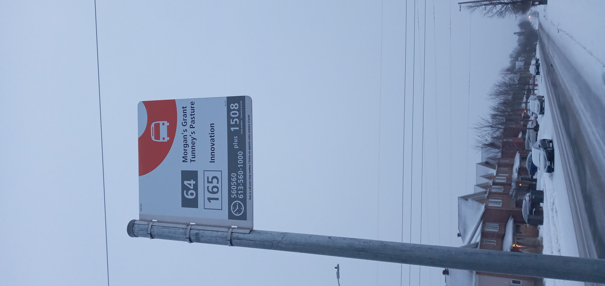
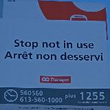

How to use
Take a photo of the bus sign from about 1m away from the sign. Upload the photo of the sign and select the sign.
Examples
Will work

This image is nice and close & not blury. A recomended distance is about 1m (~2 steps from the sign)
This sign is near straight in the picture & the ID in the corner is easy to read.
Won't work

This image is blury. Might have a hard time reading it.
This image has already been cropped. If you upload it the application wont let you crop it out. Also it will be hard to read the sign.